vbMail
The recruiting inbox a volleyball player actually runs. Keep your list of schools and coaches, write an email once, and send it to every coach you choose from your own Gmail account. Replies come back to your inbox, and vbMail files them under the right school.
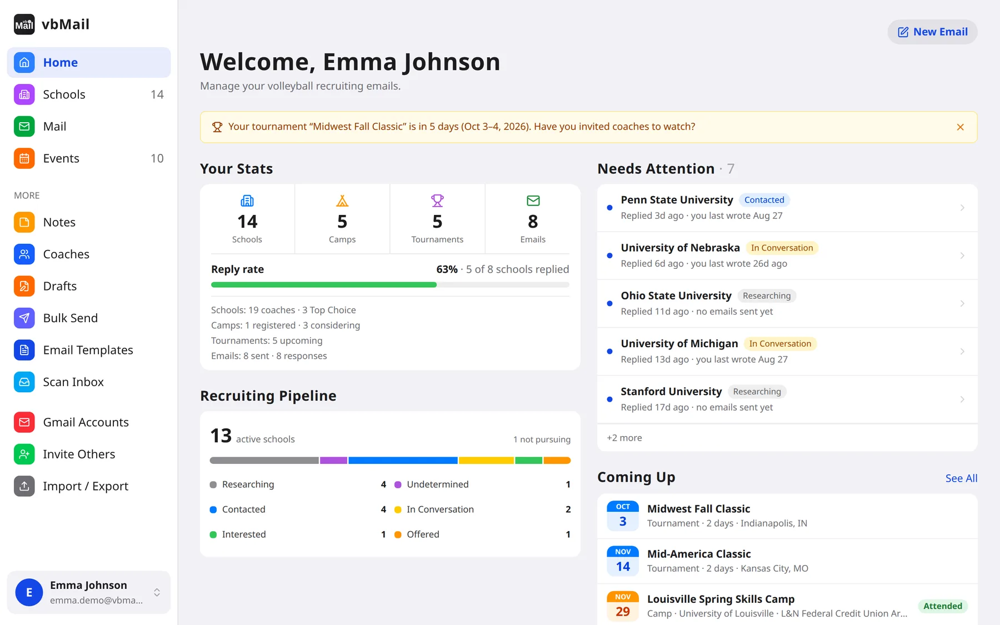
Why it exists
Getting noticed by college volleyball programs means emailing dozens of coaches, following up before every tournament, keeping track of who wrote back, and remembering which camp conflicts with which. Most families end up juggling a spreadsheet, a Gmail inbox and a calendar. vbMail puts the whole process in one app.
- Your Gmail, not a platform inbox. Emails go out through the Gmail API from your own address, and replies land in your own inbox.
- Your words, your list. No scraped recruiting databases and no AI-written emails. You pick the schools and coaches, and every email sounds like you.
- No tracking. No open-tracking pixels, and Gmail tokens are encrypted at rest.
- Built for families. Players own their data; parents get their own login with access to every linked player.
Features
Schools and coaches, organized
Every program you're considering with its division, coaching staff and a recruiting status from Researching to Offered. Group schools as Top Choice, Target, Reach or Safety, and see each school's emails, replies, camps and notes on one page.
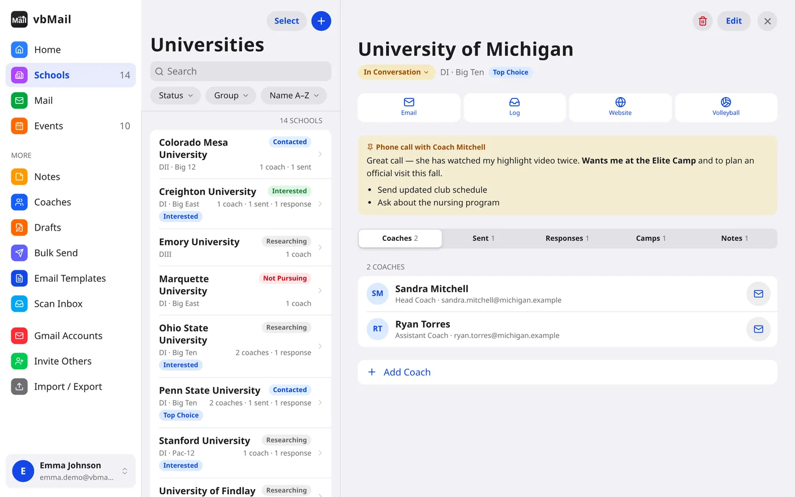
Write once, send to many
Compose to one school or bulk send to a whole list. When a school has several coaches, they all go on one email, or each gets their own copy. Salutations fill in automatically, and templates, signatures and drafts are saved.
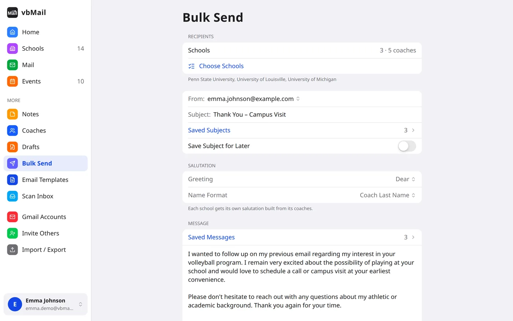
Every conversation in one mailbox
Scan your Gmail inbox and sent folder and vbMail matches each message to its school and coach, adding new coaches automatically. Camp invites, questionnaires and snail mail are detected, and you can reply straight from the message.
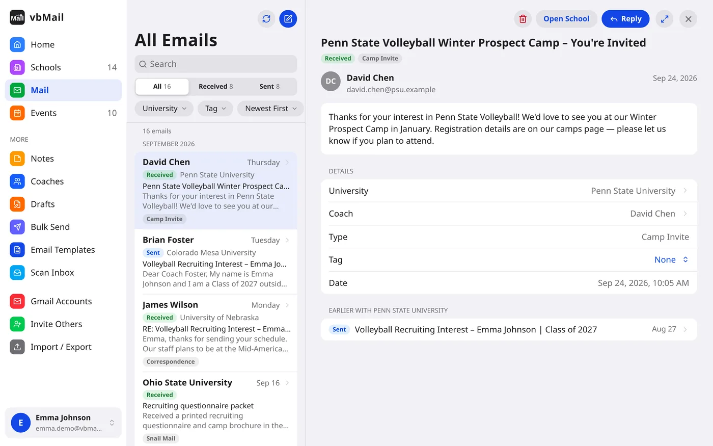
Camps and tournaments on one calendar
Track camp invites alongside your club tournament schedule. Multi-day events span the calendar, conflicts are flagged, and a reminder 14 days before each tournament nudges you to tell coaches you'll be there.
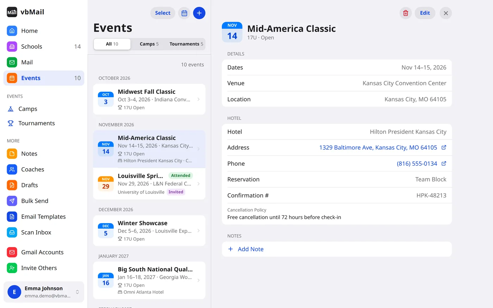
Research notes
A dated log on any school, coach, camp or tournament, with formatting and an attached photo or PDF.
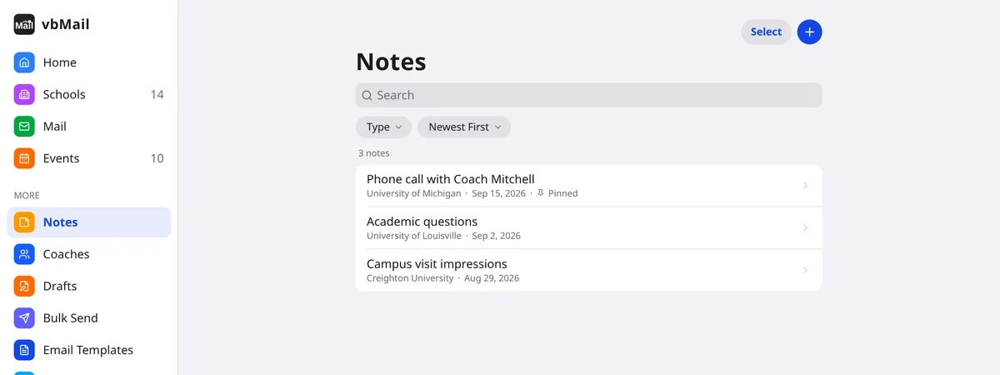
Family accounts
Link Parent and Player accounts, each with their own Google sign-in, and switch between siblings.
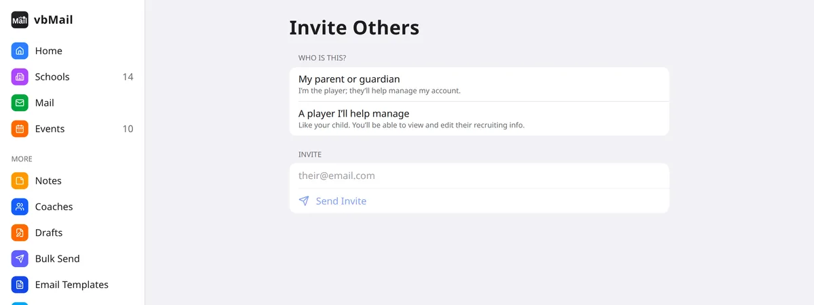
On a phone
An iOS-style design with a tab bar on phones and a sidebar with split views on iPads and computers, in light and dark mode. Installable to the home screen as a PWA.
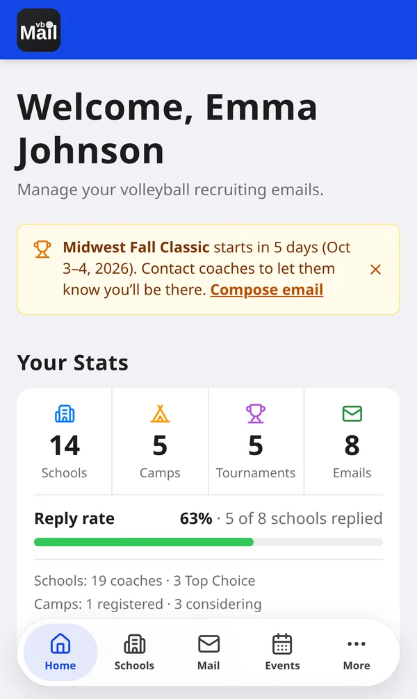
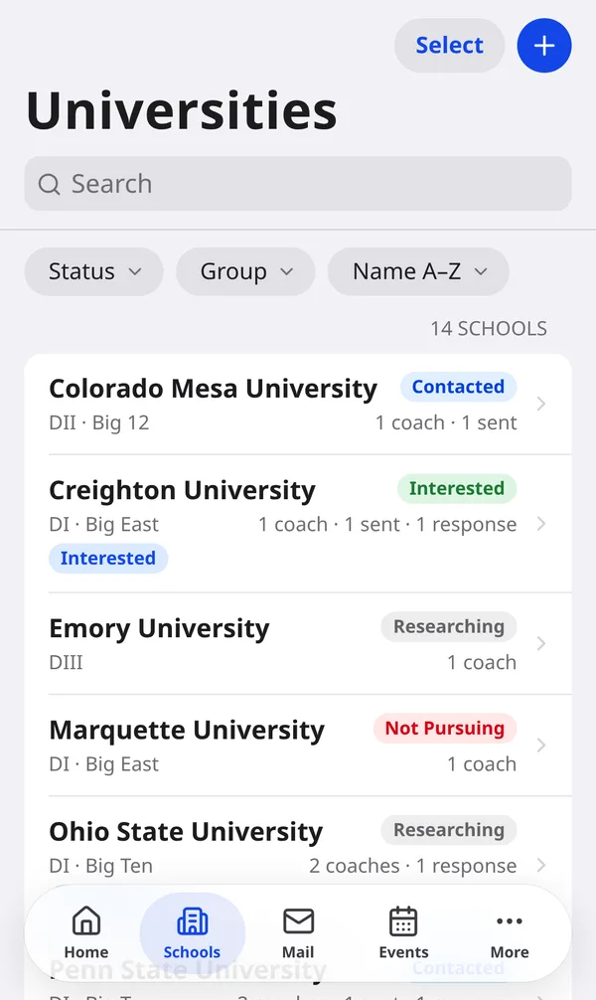
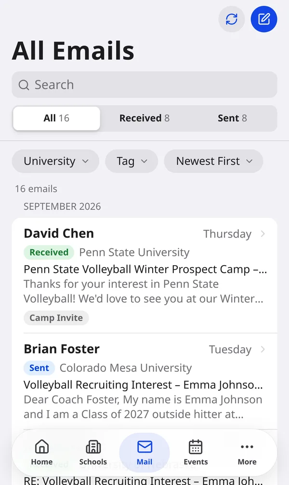
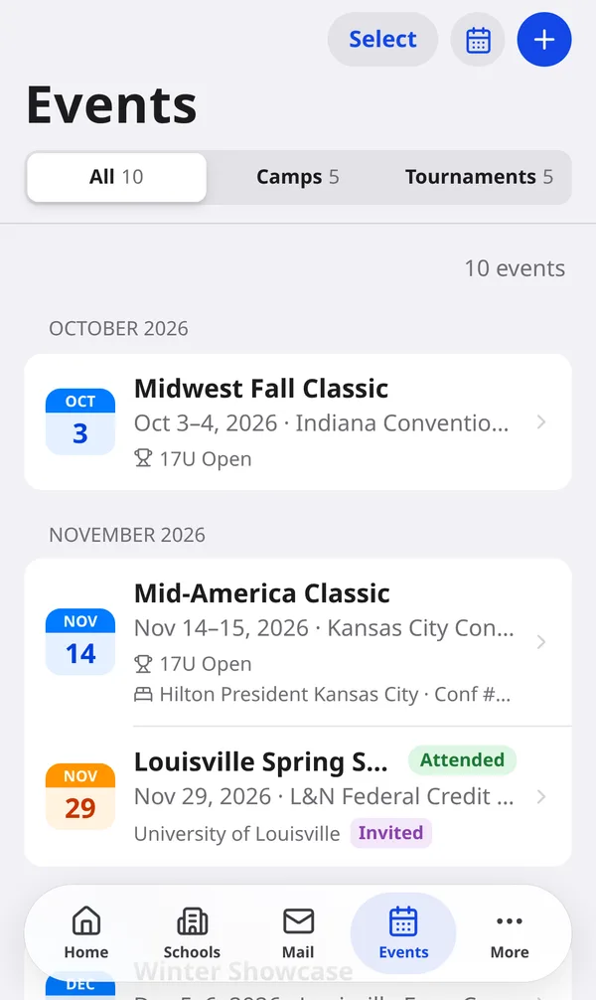